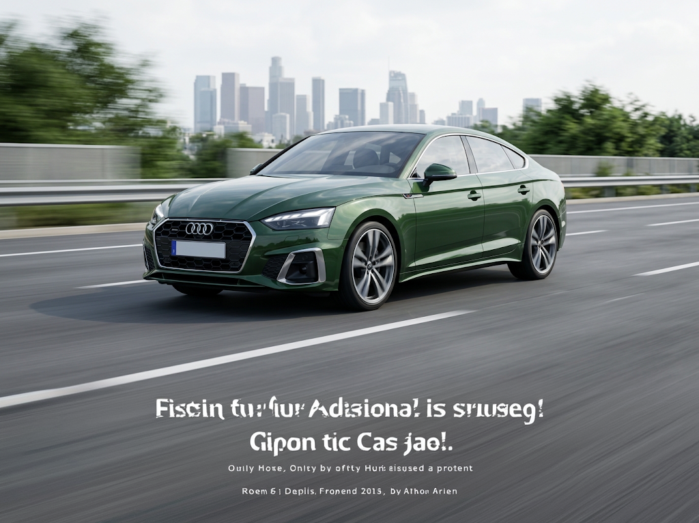

Audi Certified Pre-Owned Stuart, FL
Inspected. Tested.
Ready for what’s next.
Discover Your Next Audi in Stuart, FL
Every drive deserves the right Audi. Shop our selection of premium vehicles built to impress.
Designed. Tested. Backed by expertise.
Over 125 components are inspected by Audi-trained technicians to ensure each Audi Certified Pre-Owned vehicle is in optimal condition. Only after this comprehensive dealer inspection are we confident in backing the vehicle with our Audi Certified Pre-Owned Limited Warranty — which is more than a seal of approval, it’s a badge of honor.
The benefits of choosing Audi Certified pre-owned.
Explore the sections below to discover how comprehensive the inspection, warranty, and additional features are in order to provide you with the quality ownership experience you’re searching for in an Audi.
Audi Certified pre-owned Limited Warranty
Start your journey with confidence.
Your coverage is honored at over 300 Audi dealerships across the United States. Enjoy your Audi for miles to come with our Audi Certified pre-owned Limited Warranty featuring coverage for 1 year or 20,000 miles (whichever occurs first). The Audi Certified pre-owned Limited Warranty coverage commencement is dependent on whether any Audi New Vehicle Limited Warranty coverage remains at time of purchase.1
Comprehensive Dealer Inspection and Certification Process
Comprehensively inspected.
Only after the vehicle passes a detailed dealer inspection does it earn the right to be part of the Audi Certified pre-owned program. This process helps ensure each vehicle meets our highest standards.


24-Hour Roadside Assistance for One Year*
We’ll be there for you if you need it.
In the event of an incident, contact Audi Roadside Assistance anytime, any day. Our specialists will arrange a tow truck if needed and bring your Audi to the nearest Audi dealer to be fixed by our Audi-trained technicians. Plus, this 1-year Roadside Assistance program includes trip interruption reimbursement.*
See this site for complete details and limitations: https://www.audiusa.com/us/web/en/support/help/roadside-assistance.html1
Vehicle History Report
Know your Audi through and through.
Drive away with additional peace of mind knowing the full history of your Audi with a comprehensive third-party vehicle history report.3

Additional resources.

Audi Certified pre-owned Limited Warranty
The Audi Certified pre-owned Limited Warranty and 24-Hour Roadside Assistance allow you to drive your Audi with confidence. Learn more by downloading the PDF below.
Explore the New Audi Lineup
New Audi Hatchbacks
Compact, agile, and unmistakably refined. Explore Audi hatchbacks that blend sporty handling with premium design and everyday practicality.
New Audi Sedans
Sleek, sophisticated, and engineered to impress. Explore Audi sedans designed to deliver progressive luxury and dynamic performance on every drive.
New Audi SUVs
Bold, capable, and built for every journey. Discover Audi SUVs that pair commanding presence with advanced technology and versatile comfort.
New Audi Electrics
Silent, powerful, and charged for the future. Explore Audi electric vehicles designed to deliver instant performance and zero-emission luxury on every drive.